Activity: Modifying a part by moving select sets
This activity demonstrates how to move multiple faces in a single operation. You will modify part (1) to the shape of part (2).
Click here to download the activity file.
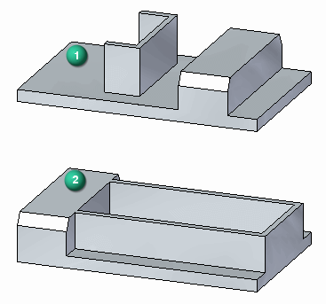
If you are using Internet Explorer and a video is not displaying in your training guide, click the Tools tab (or gear icon)→Compatibility View settings, and then clear the selection of Display intranet sites in Compatibility View.
Open select_a.par.
Move protrusion feature to other end of part.
To select the feature to move, first select the face shown.
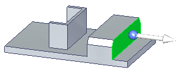
At this point, only the selected face moves.
Activate the Selection Manager mode.
Select the face shown.
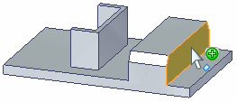
On the Selection Manager menu, choose Sets. This finds any sets that contain the selected face.
QuickPick displays the sets found. Click the Protrusion entry listed in QuickPick.
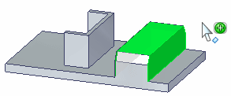
Press the Spacebar to exit the Selection Manager mode.
The selected protrusion feature participates in the move operation.
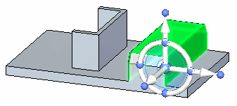
Click the axis on the steering wheel and move the feature to the other side of the channel-shaped feature.
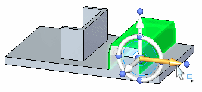
Move the feature to the approximate location and click. The move from point is the origin on the graphic handle.
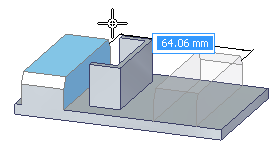
Move complete. Press the Escape key to clear the select set.
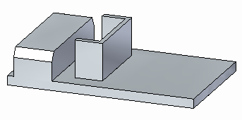
Activate the Selection Manager mode.
Select the face shown.
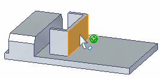
On the Selection Manager menu, choose Recognize→Rib/Boss.
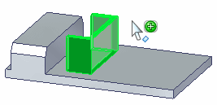
The Sets option would work here also.
Press Spacebar to exit the Selection Manager mode.
Click the axis on the steering wheel and move the select set to the edge of the part.
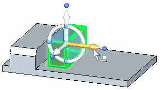
Use a keypoint on the edge of the part to define distance to move. Choose the Keypoint option on command bar.
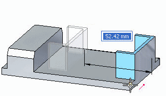
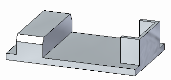
Select the face shown (1).
Both red faces move together because they are coplanar. The Design Intent panel recognizes coplanar relationships and allows you to control the relationship between these faces.
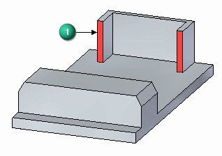
Move the faces to the end of the protrusion feature as shown. Use a keypoint to define the distance.
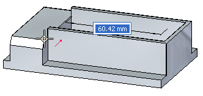
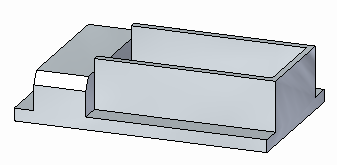
Select the top face.
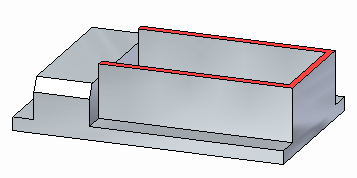
Move the top face to the top of the protrusion feature.
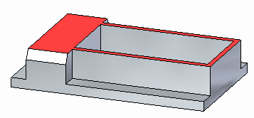
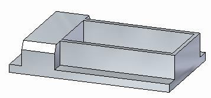
Select the protrusion feature.
You can select the protrusion from PathFinder, QuickPick, or with Selection Manager. Make sure you select the protrusion shown.
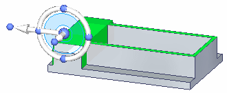
Move the select set to end of part.
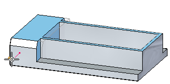
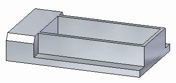
This ends the activity. Exit the file and do not save.
In this activity you learned how to create select sets for a move operation.
Click the Close button in the upper-right corner of the activity window.